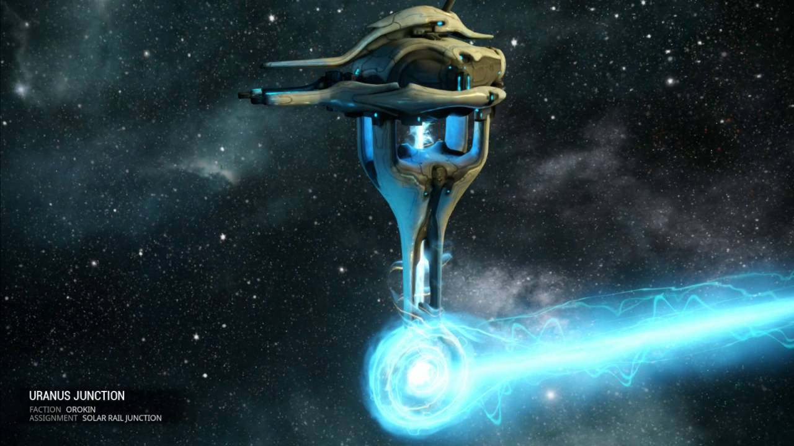

Gameplay - How Warframe Works
Jump to Junctions
Warframe is an RPG, or Role-Playing Game. This particular style of RPG requires a lot of resources obtained often by repeating certain levels, or missions, many times. This is refered to as “grinding,” or “grinding for a resource.”
Grinding is a common part of the Warframe world. There are many different mission types that the player will have to complete in order to progress. There are a total of 20 different mission types for the player to discover as they progress through the game.
Each planet has many individual missions. A fun fact is that every single mission in Warframe is named after a real location or object in space, all recognized by the International Astronomical Union.
The mission types are all presented in game, and are each clearly described. Tutorials are present for each mission type, to the necessary extent, in the game itself; these tutorials can be read over while the player is in their ship, or the “lobby.” For the sake of this guide, instead of discussing all 20 mission types, most of them will be listed off and provided with a brief description. Do not worry if not all these missions show up immediately, as some appear quite a bit later in the game. The majority of missions end in the player reaching a point simply called “Extraction.”
The Mission Types
- Arena - Fight until a certain number of enemies are defeated; small arena, hence the mission type name; infinite amount of enemies until the required amount are killed; automatic Extraction upon completion
- Assassination - Eliminate a Boss and head to Extraction, simple as that
- Assault - A specific four-part version of a Sabotage mission, only found on the Kuva Fortress; this is a mid to late game mission type, so do not concern yourself with it as a new player...yet
- Capture - Locate a target, and take them down; capture the target after defeating them, then head to Extraction
- Defense - Protect the primary objective from waves of oncoming enemies; every five waves, optional Extraction is offered, and if declined will result in another five waves of defense for any remaining players; automatic Extraction upon completion
- Excavation - Protect an excavator while providing it with power from power cells, dropped by mission-exclusive Power Carrier enemies; Extraction is available once one excavator is successful and completes its excavation
- Exterminate - Kill a certain amount of enemies before heading to Extraction; a version of Arena bearing a larger map and a finite amount of enemies
- Hijack - Free a certain non-living objective and move it to Extraction
- Infested Salvage - Unblock and obtain access to data consoles, using Antiserum Injectors dropped by enemies; every time a console's data is decrypted and all enemies in the area are killed, Extraction is offered, and if declined will result in the player having to find another console to hack; this is a late game mission type
- Interception - Capture radio towers on the map to intercept enemy transmissions before the enemy obtains them; once the transmissions are obtained, head to Extraction
- Junction - Solo mission that requires players to fight a Specter to progress throughout the Star Chart; will be discussed in more detail later on
- Mobile Defense - Carry a datamass to many different consoles and defend them, for a period of time instead of a number of waves, until hacking is completed, then proceed to the next console with the datamass; head to Extraction upon hacking all the consoles
- Pursuit - Chase an enemy ship in an Archwing to extract the black box, before automatic Extraction; this is a mid game mission type
- Recovery - Only available after being defeated by a randomly-appearing enemy called the Zanuka Hunter; requires players to collect their missing equipment and escape to Extraction; is a solo mission required in order to continue with the game, as players cannot start another mission, even with different equipment, until this one is completed
- Rescue - Locate and bring an allied captive to Extraction
- Rush - Chase and destory three ships using your Archwing; this is a mid game mission type
- Sabotage - Reach an objective, and follow instructions given by The Lotus to destory it, before heading to Extraction
- Spy - Obtain information from enemy consoles before heading to Extraction
- Survival - Fight an endless wave of enemies for a set amount of time, usually at least five minutes, before heading to Extraction; a life support feature is introduced, forcing the player to either use capsules provided by The Lotus or kill enemies in order to stay alive and not fail the mission
- Trial - Difficult missions requiring at least four players to even start, with a maximum of eight players; altered versions of reqular missions requiring a crafted key to begin; is the only mission type that allows more than four players is a single group, and is also the only mission type that requires a group to play in
Junctions

Warframe makes the player traverse the solar system, through a map called the Star Chart. The Junctions, in short, allow the player to access a new planet on the Star Chart. Every area, except for the Void, requires a Junction to be completed. These Junctions are guarded by Specters, with a single Specter in each Junction. These Specters are ghostly clones of different Warframes which the player must defeat in order to unlock the Junction.
Specific tasks are required to unlock the battle for each Junction. These tasks must be completed in order for the player to fight the Specter, and the Specter must be defeated for the player to proceed. Players can go to the Junctions, but cannot begin the battles, until the objectives are all completed. Completing a Junction gives the player certain rewards depending on the Junction cleared, as well as access to a new planet in the Star Chart.
It is necessary to complete missions and Junctions to progress through the story in Warframe, so please do not delay!
Return to the Homepage...